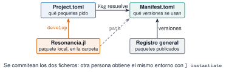

Un análisis de vibraciones que da un resultado hoy y otro distinto dentro de seis meses, o en el ordenador de un compañero, no sirve para vigilar una estructura. La causa más frecuente no es el algoritmo sino el entorno: una versión distinta de un paquete. Esta unidad explica cómo Julia fija el entorno, cómo se usa el entorno único del curso y cómo se trabaja con Resonancia.jl, el paquete local con las funciones reutilizables.
NotaCómo se lee esta unidad
Tiempo orientativo: 60 minutos. Objetivos (3), teoría en cinco píldoras (12), práctica guiada (25), «Pídeselo a Claude» (8), ejercicios (10) y cierre (2). En esta unidad no se instala ni se actualiza ningún paquete: lo que se ejecuta aquí solo lee el entorno. Las órdenes que modifican el entorno se muestran en bloques sin ejecutar.
Objetivos y prerrequisitos
Objetivos. Al terminar esta unidad sabrás:
usar el modo paquetes (]) para ver, añadir y quitar paquetes;
explicar la diferencia entre Project.toml y Manifest.toml y por qué se commitean los dos;
reconstruir en otro ordenador el entorno del curso con instantiate;
cargar Resonancia.jl y consultar la documentación de sus funciones;
explicar para qué sirve Revise.jl al desarrollar un paquete.
Reparto con otras unidades. Aquí se aprende a usar el entorno. Crear un paquete propio, con módulos, tests y documentación, es el tema de J3.2. El control de versiones con Git está en C3.
Teoría breve
NotaUn poco de historia: Julia 1.0 y la estabilidad
El 8 de agosto de 2018, durante JuliaCon, se fijó oficialmente la versión 1.0, presentada como el resultado de casi diez años de trabajo. Lo más importante fue la promesa de estabilidad: el código escrito para 1.0 debía seguir funcionando en las versiones 1.x posteriores, de modo que la comunidad pudiera centrarse en paquetes y herramientas (The Julia Project 2018). La estabilidad del lenguaje no basta, sin embargo, para repetir un resultado: los paquetes cambian de versión. Para eso existe el Manifest.toml.
Los paquetes se gestionan desde el REPL, con ], o desde código con using Pkg. Las órdenes que más se usan:
TipChuleta: Pkg
] status # paquetes del entorno activo] add Distributions # añade un paquete (modifica Project.toml y Manifest.toml)] rm Distributions # lo quita] update # actualiza a las últimas versiones compatibles] instantiate # instala lo que dicen los ficheros del entorno] activate . # activa el entorno de la carpeta actual
AdvertenciaErrores frecuentes
add, rm y updatecambian el entorno y, por tanto, los resultados de todas las páginas. En este curso no se ejecutan sin decidirlo antes, y en Claude Code piden confirmación. Si un paquete que has añadido por probar no es del curso, quítalo y comprueba con git diff que Project.toml y Manifest.toml han vuelto a su estado.
] update es una orden de solo lectura: muestra qué paquetes tienen versión nueva pero no cambia nada.
Falso. update instala las versiones nuevas y reescribe Manifest.toml. La orden de solo lectura es ] status (con ] status -o se ven los paquetes desactualizados).
J1.2.2 Project.toml y Manifest.toml
Un entorno de Julia son dos ficheros en la raíz del proyecto:
Fichero
Contiene
Se edita
Project.toml
los paquetes que pides (nombre y UUID) y, si procede, los intervalos de versión admitidos ([compat])
con ] add y ] rm
Manifest.toml
la versión exacta de cada paquete, de sus dependencias y de las dependencias de estas
solo lo escribe Pkg
La analogía con Python es directa: pyproject.toml hace de Project.toml y uv.lock hace de Manifest.toml. Los dos ficheros se commitean. El Project.toml dice qué se necesita; el Manifest.toml garantiza que quien lo reconstruya obtiene las mismas versiones que tú.

Figura 1: Relación entre los ficheros del entorno. Project.toml lista lo que se pide; Pkg lo resuelve con el registro de paquetes y escribe en Manifest.toml las versiones exactas. Resonancia.jl es un paquete local que se incorpora con develop.
Quieres saber con qué versión exacta de DataFrames se produjo una figura. ¿Qué fichero miras?
Project.toml
Manifest.toml
README.md
Manifest.toml: el Project.toml solo contiene el nombre y el UUID del paquete.
J1.2.3 El entorno único del curso
El curso usa un único entorno, el de la raíz del repositorio. Todas las páginas y scripts se ejecutan con julia --project=., así que todas comparten las mismas versiones. En un ordenador nuevo, tras clonar el repositorio, basta con:
julia--project=. -e'using Pkg; Pkg.instantiate()'
instantiate lee el Manifest.toml y descarga exactamente esas versiones. Es el equivalente de uv sync en Python.
J1.2.4 Resonancia.jl, el paquete local
Toda función que se reutiliza en varias páginas vive en el paquete Resonancia.jl, con su docstring y su test, y no se copia de una página a otra. El paquete está en la carpeta Resonancia.jl/ del repositorio y se incorporó al entorno en modo desarrollo (] develop ./Resonancia.jl): Julia no lo copia, lo lee directamente de la carpeta, y en Manifest.toml queda su ruta (path = "Resonancia.jl"). Desde cualquier página:
usingResonancia?psd_welch # documentación de una función del paquete
J1.2.5 Revise.jl
Cuando se edita un paquete en desarrollo, Julia no se entera hasta que se reinicia el REPL, y reiniciar significa volver a compilar. Revise.jl vigila los ficheros y aplica los cambios al vuelo, de modo que se edita una función y se prueba de inmediato. Se instala una sola vez en el entorno personal (no en el del curso) y se carga antes del paquete:
usingReviseusingResonancia
NotaIdea clave
Project.toml es la lista de la compra; Manifest.toml, el ticket con las marcas y lotes exactos. Para repetir un resultado hace falta el ticket.
Explica en dos frases qué problema resuelve Revise.jl y por qué se carga antes de using Resonancia.
Dice que permite probar cambios en el código sin reiniciar Julia.
Dice que debe estar cargado antes del paquete para poder seguirlo desde el principio.
AdvertenciaErrores frecuentes: el entorno equivocado
Si using Resonancia falla con «Package Resonancia not found», casi siempre se ha arrancado Julia sin --project=. o fuera de la carpeta del repositorio. Se comprueba con ] status: la primera línea dice qué entorno está activo. Otro clásico es editar Manifest.toml a mano: lo escribe Pkg, y la documentación de Pkg indica que no debe editarse (TOML Files 2026).
Paso 2. ¿Qué versión de Resonancia.jl se está usando?
Ver el código
(paquete ="Resonancia", version =string(pkgversion(Resonancia)))
(paquete = "Resonancia", version = "0.5.0")
Paso 3. Usar una función del paquete. Se regenera la señal de J1.1 (semilla 1) y se calculan dos cosas con funciones de Resonancia.jl: el valor eficaz cada 2 s y los picos del espectro de Welch.
Los dos picos caen en 2,54 Hz y 7,03 Hz: las frecuencias reales (2,5 y 7 Hz) con la resolución del espectro, que aquí es \(f_s/n_{seg}=100/512\approx0{,}195\) Hz. El método de Welch se explica en M3.6; ahora solo interesa ver que una función del paquete se usa con using Resonancia, sin copiar código.
Figura 2: Densidad espectral de potencia de la señal de J1.1 calculada con psd_welch de Resonancia.jl. Los dos picos corresponden a los dos modos, de 2,5 y 7 Hz.
Paso 4. Mirar la ayuda desde código.@doc devuelve el docstring de una función, el mismo que muestra ?.
@doc psd_welch
En Python el reparto es el mismo, con uv: pyproject.toml pide, uv.lock fija y uv sync reconstruye el entorno. La versión probada con pytest está en python/entorno.py.
uv sync # equivale a ] instantiateuv run python # equivale a julia --project=.uv tree # árbol de dependencias
from entorno import dependencias, versiones_fijadasprint(dependencias("pyproject.toml")) # lo que se pideprint(versiones_fijadas("uv.lock")["scipy"]) # la versión exacta de scipy
Añadir o quitar paquetes (uv add, uv remove) cambia el entorno y, igual que ] add en Julia, se hace solo de forma deliberada.
NotaQué se ha conseguido
Se ha leído el entorno sin tocarlo, se ha comprobado qué versión de Resonancia.jl se usa y se han aplicado tres funciones del paquete. Lo importante es la rutina: primero se mira el entorno, después se usa el paquete, y el entorno solo se cambia a propósito.
«Pídeselo a Claude»
TipPrompt
«En la raíz del repositorio resonancia: (1) lista los paquetes que declara Project.toml y la versión exacta de cada uno que fija Manifest.toml; (2) dime qué versión de Resonancia.jl se carga con using Resonancia y de dónde (ruta); (3) explica la diferencia entre Project.toml y Manifest.toml. No ejecutes ninguna orden que modifique el entorno (add, rm, update) ni edites esos ficheros. Si no puedes comprobar algo, dilo.»
Verifica. (a) Que las versiones que da coinciden con las que ves tú en Manifest.toml (grep -A3 'deps.CSV' Manifest.toml). (b) Que no ha ejecutado Pkg.add ni Pkg.update: git status debe mostrar Project.toml y Manifest.toml sin cambios. (c) Que la ruta de Resonancia apunta a la carpeta Resonancia.jl/ del repositorio y no a una copia. (d) Que no inventa versiones de paquetes que no están en el Manifest.toml.
Ejercicios
¿Cuántos paquetes pide directamente el Project.toml del curso? (Se obtiene con length(proyecto["deps"]).)
Ocho: CSV, CairoMakie, DSP, DataFrames, FFTW, Resonancia, XLSX y YAML. Las dependencias de estos, que son muchas más, solo aparecen en Manifest.toml. (Si tu copia del repositorio es anterior a la incorporación de DSP y FFTW, saldrán seis.)
Con la señal de la práctica, ¿cuántos picos devuelve buscar_picos(f, P; n=2)? Después cambia a n=1 y di qué frecuencia queda.
length(picos) da el número de picos y f[picos] sus frecuencias.
Con n=2 devuelve 2 picos. Con n=1 queda el más alto, el de 2,54 Hz, porque el modo de 2,5 Hz tiene amplitud 1 y el de 7 Hz solo 0,4.
Un compañero clona el repositorio en otro ordenador y obtiene resultados distintos a los tuyos. Enumera tres comprobaciones sobre el entorno, en orden.
Que ejecuta con --project=. y no con el entorno por defecto.
Que ha hecho instantiate a partir del mismo Manifest.toml (y que el fichero está commiteado).
Que la versión de Julia coincide (VERSION).
La doy por superada si…
Sé listar los paquetes de un entorno y distinguir lo que se pide de lo que se instala.
Explico por qué se commitean Project.toml y Manifest.toml.
Sé reconstruir el entorno en otro ordenador con instantiate.
Cargo Resonancia.jl, uso una de sus funciones y leo su documentación.
Sé para qué sirve Revise.jl y por qué add, rm y update se ejecutan solo a propósito.
Cierre. Escribe tres líneas: qué he entendido, qué todavía no domino y cuál es mi siguiente paso pequeño. Si Claude ha tocado algo, revisa git diff antes de aceptarlo.
Son las mismas que aparecen en el margen, junto al texto. La lista completa del curso, con el estado de verificación de cada ficha, está en recursos/bibliografia.bib del repositorio.